CVE Search¶
Table of Contents¶
Change Log¶
Date |
Version |
Change |
|---|---|---|
6/2020 |
1.0.2 |
Proxy support added |
About This Package:¶
This package contains Resilient functions that allows one to search for Common Vulnerability Exposures (CVE).
This package implements different ways to search the CVE database such as:
Browse product and vendor categories
Search by specific CVE ID
Retrieve last 30 CVE’s
This package makes use of the following CVE API call to get information on a given query
https://cve.circl.lu/api/{search param}/{vendor name}/{product name}For more information, see the circl website
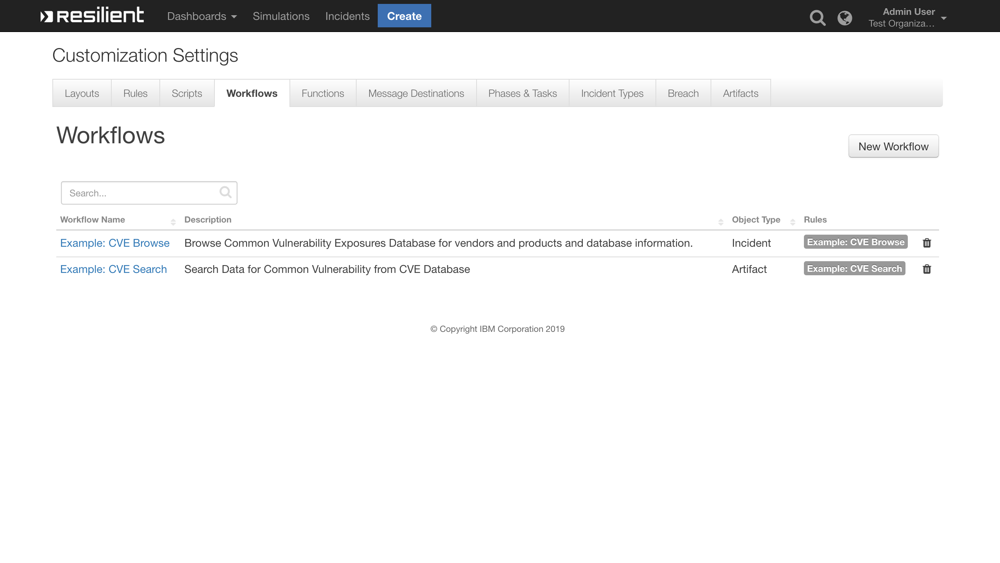
CVE Search Function Layout:¶
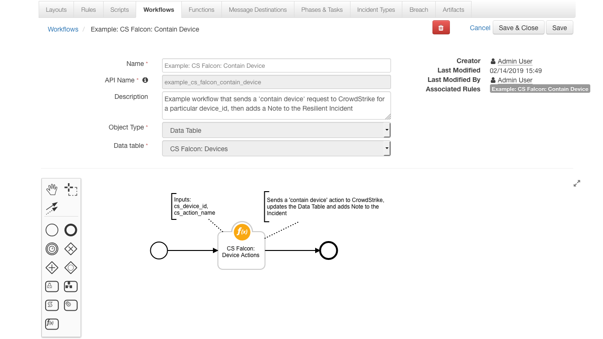
CVE Search Pre-Process Script¶
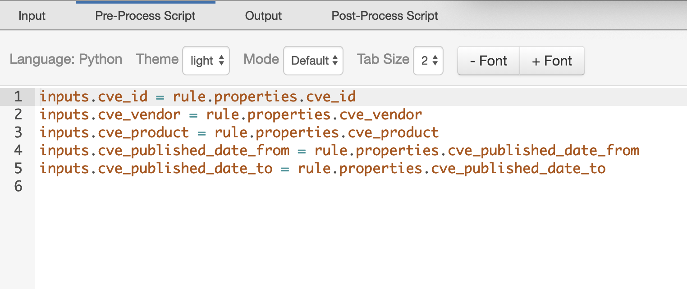
CVE Search Post-Process Script¶
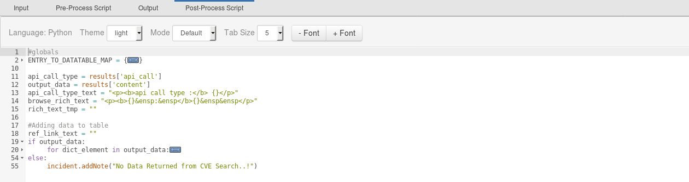
CVE Browse Function Layout:¶
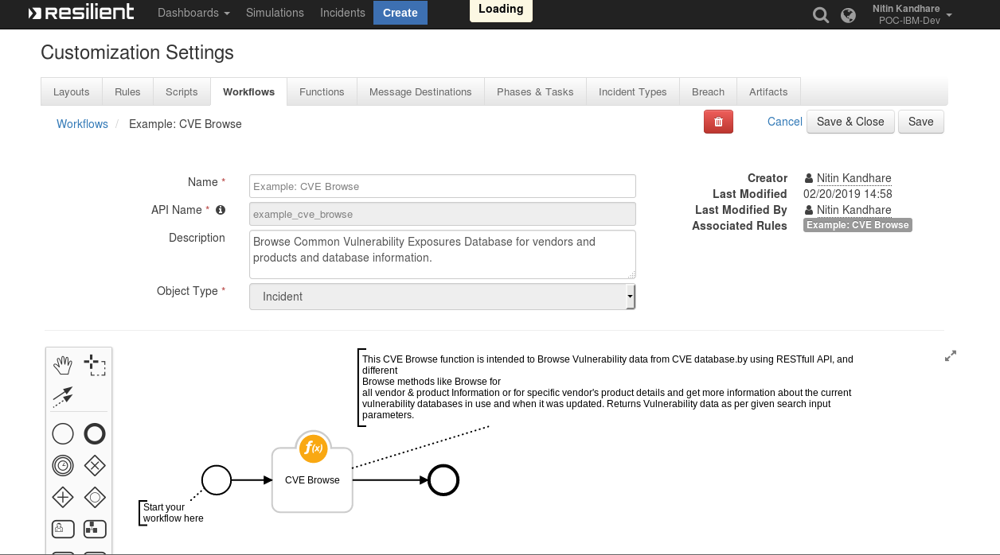
CVE Browse Pre-Process Script¶
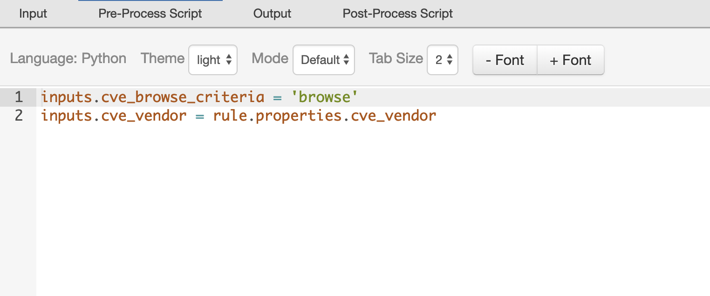
CVE Browse Post-Process Script¶
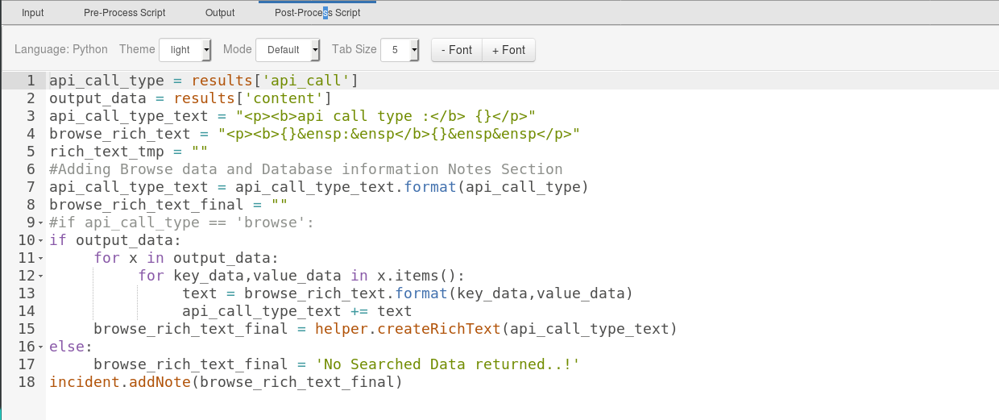
Prerequisites:¶
Resilient Appliance >= v31.0.0
Integrations Server running resilient_circuits >= v30.0.0
Installation¶
This package requires that it be installed on a RHEL or CentOS platform using the resilient-circuits framework.
Download the
.zipfile from the XForce App Exchange and extract it. You will find a file called:fn_cve_search-<version>.tar.gzCopy this file to your Integrations Server
To install the package, run:
$ pip install fn_cve_search-<version>.tar.gz
To import the function, example rules, data tables and workflows into your Resilient Appliance, run:
$ resilient-circuits customize -l fn-cve-search
To update your
app.configfile with the required CVE Search configurations, run:$ resilient-circuits config -u
Access your
app.configfile and review the parameters added. Edit themax_results_displaycounter value to limit the maximum number of search results to display on table.[fn_cve_search] # Flag display maximum CVE Entries on the resilient table max_results_display = 50 # Base URL of Common Vulnerability Exposures Data Base. cve_base_url = https://cve.circl.lu/api # add proxies here or use [integrations] (see resilient-lib) #http_proxy= #https_proxy=
To uninstall CVE Function from Resilient, run:
$ pip uninstall fn_cve_search
Data Table¶
Data Table Utils: CVE Searched Data¶
This table will contain the results of the CVE searches. 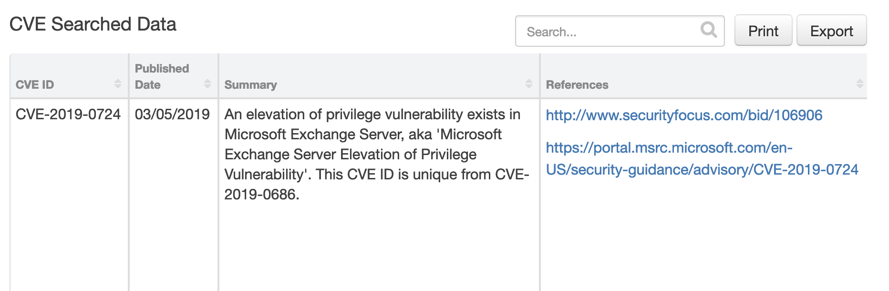
Display the Data Table in an incident¶
In order to display the CVE Searched datatable in your incident, you must modify your Layout Settings:
Go to Customization Settings > Layouts > Incident Tabs > + Add Tab 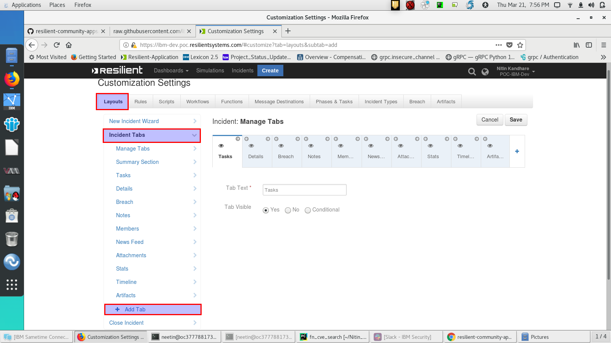
Enter
CVE SEARCH DATAand click Add 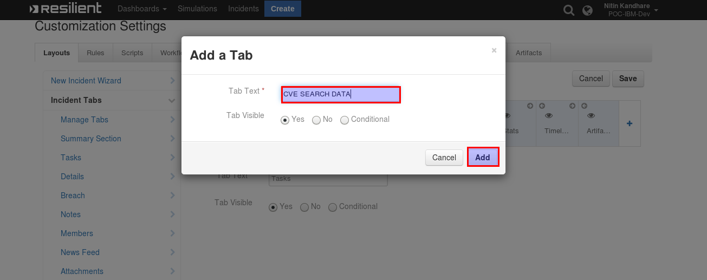Drag the Data table into the middle and click Save 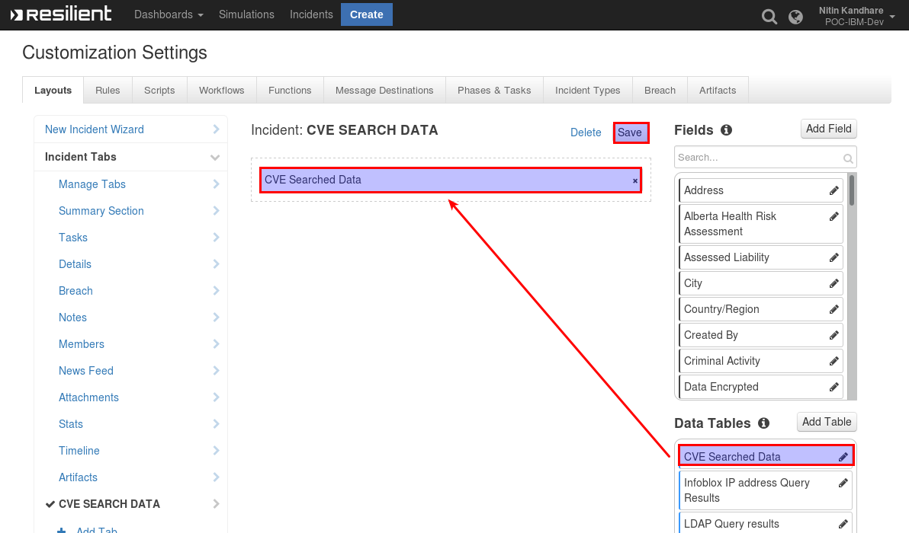
Within an incident, the CVE Search Data tab contains the CVE Searched Data Table
Function Inputs¶
CVE Search Function¶
|Input Name |Type |Example|Info| |—|—|—|—|—| |cve_id|String |CVE-2008-3949 |Specific vulnerability ID | |cve_vendor|String| microsoft|a vendor name to search for cve. Unsupported as of 1.0.1 | |cve_product|String|excel|Name of the Product to Search in CVE Database. Unsupported as of 1.0.1| |cve_published_date_from|Date Picker|03/01/2019|Select CVE Published Date. Unsupported as of 1.0.1| |cve_published_date_to|Date Picker|03/01/2019|End date range to search cve data. Unsupported as of 1.0.1|
CVE Browse Function¶
|Input Name |Type |Example|Info| |—|—|—|—|—| |cve_browse_criteria |select |Browse | CVE Browse Criteria i.e Browse (for vendors & product information)| |cve_vendor|text|apple|a vendor name to browse for cve |
Function Output¶
The payload from the function will contain the JSON from the CVE API Call and the name of the API Call
results = { "content": #JSON returned from CVE API Call, "api_call": #"last"/"browse"/"search"/"cve"/"db" }
To see the output of each of the API calls for this Function, we recommend running
resilient-circuitsinDEBUGmode.To do this run:
$ resilient-circuits run --loglevel=DEBUG
Pre-Process Script¶
CVE Browse
This example sets the cve_browse_criteria, cve_vendor inputs to the entered vendor name
inputs.cve_browse_criteria = 'browse'
inputs.cve_vendor = rule.properties.cve_vendor
CVE Search
This example sets the cve_id, cve_vendor, cve_product, cve_published_date_from, cve_published_date_to inputs to search selections entered on the rule dialog box. See below for the combinations used in searches.
# Specific CVE ID
inputs.cve_id = rule.properties.cve_id
# Name of the Vendor
inputs.cve_vendor = rule.properties.vendor
# Name of the product
inputs.cve_product = rule.properties.product
# Search CVE Data from Date
inputs.cve_published_date_from = rule.properties.cve_published_date_from
# Search CVE Data upto Date
inputs.cve_published_date_to = rule.properties.cve_published_date_to
Post-Process Script¶
Returned results are parsed within the post-process script as results.get("content"). Based on the api_call type, the data is represented as follows:
Example: CVE Browsefunction data is displayed on incident notes, andExample: CVE Searchfunction data displayed on theCVE Searched Datatable.
CVE Search¶
#globals
ENTRY_TO_DATATABLE_MAP = {
"cve": "cve_id",
"pubdte": "published_date",
"sum": "summary",
"ref": "references",
"vc": "vulnerability_configuration",
"vc2": "vulnerable_configuration_cpe_2_2"
}
api_call_type = results['api_call']
output_data = results['content']
api_call_type_text = "<p><b>api call type :</b> {}</p>"
browse_rich_text = "<p><b>{}&ensp:&ensp</b>{}&ensp&ensp</p>"
rich_text_tmp = ""
#Adding data to table
ref_link_text = ""
if output_data:
for dict_element in output_data:
rich_text_tmp = ""
table_row_object = incident.addRow("cve_data")
for key_data,value_data in dict_element.items():
if key_data == 'Published':
table_row_object[ENTRY_TO_DATATABLE_MAP["pubdte"]] = int(value_data)
elif key_data == 'id':
table_row_object[ENTRY_TO_DATATABLE_MAP["cve"]] = value_data
elif key_data == 'summary':
table_row_object[ENTRY_TO_DATATABLE_MAP["sum"]] = value_data
elif key_data == 'references':
for link_url in value_data:
ref_link_text += '<p><a href="{0}">{0}</a></p>'.format(link_url)
table_row_object[ENTRY_TO_DATATABLE_MAP["ref"]] = ref_link_text
elif key_data == 'vulnerable_configuration':
if value_data:
for vc_collection in value_data:
if isinstance(vc_collection,dict):
for key_data,value_data in vc_collection.items():
text = browse_rich_text.format(key_data,value_data)
rich_text_tmp += text
else:
rich_text_tmp += "<p>{}</p>".format(vc_collection)
else:
rich_text_tmp = "No Data"
table_row_object[ENTRY_TO_DATATABLE_MAP["vc"]] = rich_text_tmp
elif key_data == 'vulnerable_configuration_cpe_2_2':
rich_text_tmp_2 = ''
if value_data:
for vc_collection in value_data:
rich_text_tmp_2 += "<p>{}</p>".format(vc_collection)
else:
rich_text_tmp_2 = "No Data"
table_row_object[ENTRY_TO_DATATABLE_MAP["vc2"]] = rich_text_tmp_2
else:
incident.addNote(u"No data returned from CVE Search\n\nCVE-ID: {}\nVendor: {}\nProduct: {}".format(rule.properties.cve_id, rule.properties.cve_vendor, rule.properties.cve_product))
CVE Browse
api_call_type = results['api_call']
output_data = results['content']
api_call_type_text = "<p><b>api call type :</b> {}</p><p><b>vendor :</b> {} </p>"
browse_rich_text = "<p><b>{}&ensp:&ensp</b>{}&ensp&ensp</p>"
rich_text_tmp = ""
#Adding Browse data and Database information Notes Section
api_call_type_text = api_call_type_text.format(api_call_type, rule.properties.cve_vendor)
browse_rich_text_final = ""
if output_data:
for x in output_data:
for key_data,value_data in x.items():
text = browse_rich_text.format(key_data,value_data)
api_call_type_text += text
browse_rich_text_final = helper.createRichText(api_call_type_text)
else:
browse_rich_text_final = 'No searched data returned'
incident.addNote(browse_rich_text_final)
Rules¶
Rule Name |
Object Type |
Workflow Triggered |
Activity Fields |
|---|---|---|---|
Example: CVE Browse |
Incident |
Example: CVE Browse |
CVE Browse Criteria values : Browse, CVE Vendor |
Example: CVE Search |
Incident |
Example: CVE Search |
CVE Search Criteria |
CVE functions perform data searches as follows
Browse:
If all other inputs are empty, all the vendors in the database are returned.
If a vendor name is supplied, all the products associated with the vendor are returned.
Search:
If a CVE ID is supplied, data related to specific CVE ID is returned.
If no parameters are supplied, the last 30 latest vulnerabilities from the database are returned up to the
max_results_displayflag.